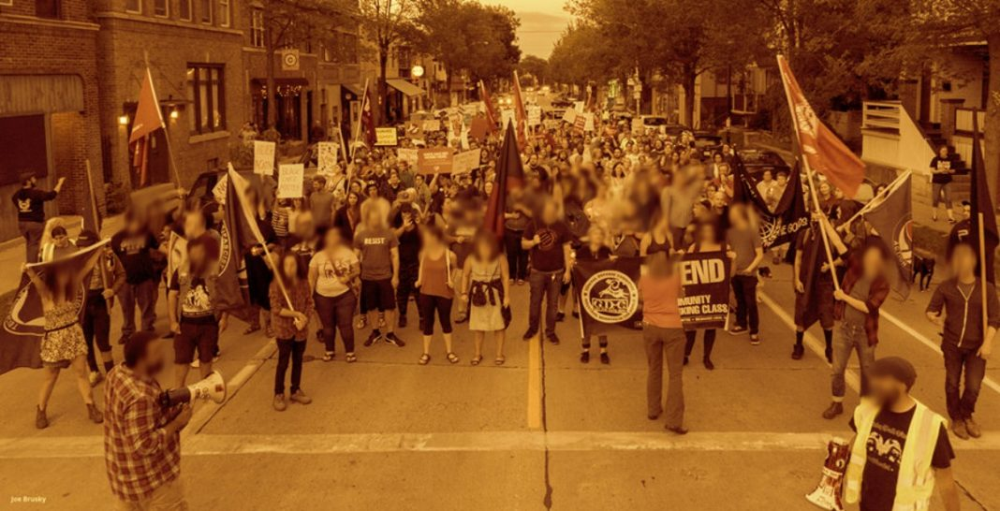

Building Mass Antifascism in Milwaukee
Submitted on Fri, 08/25/2017 - 7:35pm
By Milwaukee IWW - It's Going Down, August 21, 2017
On Saturday August 12th, white nationalists converged on the city of Charlottesville, Virginia to protest the removal of a statue of Robert E. Lee and the renaming of Lee Park to Emancipation Park. The fascists were outnumbered by antifascists and were driven from the park, but not without great cost, as we all know. On that day a fascist drove his car at high speed into the antifascist demonstration, injuring over 20 people and killing one, a 32 year old paralegal named Heather Heyer.
In Milwaukee we had been communicating with people in Charlottesville since Friday night. A friend said he worried someone from our side would be killed. To our horror this came to be true. The event gripped the country, and people were called to the streets to condemn the rising tide of fascism and racism, and in remembrance of the brave antifascist Heather Heyer.
As news of Heather’s death spread on Saturday afternoon, we called for an emergency meeting that night in a park in the Riverwest neighborhood. Around 30 people came together to discuss how to respond to the attack in Charlottesville and move forward. The assembly agreed to call for a vigil the next day at 7:00 PM in the same park, rather than downtown.
Mass demonstrations against Trump and other targets are typically held in Milwaukee’s downtown area in the evenings. We decided that since few people live downtown, and that the downtown area is not a working class neighborhood, we should instead hold the vigil where we stood, in the heart of Riverwest. There was some consideration of stepping outside of the comfort zone of a friendly neighborhood, but ultimately the group determined that for this demonstration, we should organize where we have a base. It was this decision which helped ensure a large turnout of working class people.
We went about doing the work to make the vigil happen. We gathered literature for tabling, collected our megaphones, banners, and flags. Artists provided sign making materials for people to make their own signs as the vigil was getting underway. We edited our General Defense Committee outreach flier to announce a follow up meeting, and quickly found space to host it. Organizers put together a speakers list and made sure to raise the voices of our comrades of color and women members. Members even put together a screen printing table in the park with a “Good Night Far Right” image. Allied organizations turned out their members and provided support. We made sure to have marshals wearing identifiable vests who knew how to handle themselves in the street. The marshals were tasked with managing traffic and ensuring the march proceeded slowly so everyone could stay together as a group. An experienced member crafted a media advisory and called all the major media outlets in town.
On Sunday night as 7:00 neared, people poured into the small park. Speakers opened with a moment of silence for Heather Heyer and emphasized the importance of the broader struggle. We spoke of the need to support the fights against deportations, the police, racism, and white supremacy, and the importance of organizing the working class. The crowd had swelled to around 400 people by the time the last speaker finished.
After the speeches, people then flooded into the streets to march through the neighborhood. Chants of “No Nazis, No KKK, No Fascist USA” reverberated off the polish flats and duplexes of Riverwest. We headed down a side street and people came out of their houses to join in and cheer us on. Families waved and cheered from their porches, joining us in the chants even if they didn’t join the march. A sea of people waved red and black flags, IWW flags, and antifascist flags. The march was led by two black IWW banners, one reading “Direct Action Gets the Goods” and another for the General Defense Committee that reads “Defend the Union, the Community, the Working Class.”
The march rounded the corner onto a major through street and paused in front of a popular local coffee shop to allow the march to tighten up, but it still filled an entire city block. The strength and power of our community was undeniable. The police looked on from a distance, a police liaison approached. They simply gave thumbs up and didn’t even attempt to control the demonstration. We turned another corner and marched back up another side street chanting “Say it Loud, Say it Clear, Refugees are Welcome Here.” As we rounded the final block and poured back into the park our numbers had grown to over 500 people.
After the demonstration we stuck around to clean up the park and retired to our favorite bar to hang out, decompress, debrief and plan next steps. We also set about planning our next General Defense Committee meeting which was looking like it was going to be well attended. The next day we spoke with Wisconsin Public Radio about the mass demonstrations taking place all over the country and the rise of the alt right. We shared our vision of a mass anti-fascist and anti-racist working class movement with a statewide radio network that reaches millions of listeners.
In the lead up to the Wednesday GDC meeting we made sure to have a tight well-organized program and spent two hours making an agenda the night before. Wednesday rolled around and the librarians at the branch we decided to host our meeting at seemed a bit on edge. We reassured them that we are on the side of justice, and ultimately they were supportive. Nearly 100 people showed up to the meeting, most of them folks who were new to the IWW and GDC. It was a challenge to make sure each person’s voice was heard, but everyone who wanted to speak had a chance. Here is a rough outline of the agenda.
- Intros
- What happened in Charlottesville?
- What is the General Defense Committee? (Here we gave a presentation on our previous actions. We showed pictures of self defense training, countering Milo Yiannopoulos at UW-Milwaukee, stopping a pro-Trump March, shutting down a fascist musician’s tour stop at a popular local venue, hosting our own shows and cultural events, providing security for actions by the immigrant community, and supporting immigrant students organizing to make Milwaukee Public Schools a sanctuary district. We accomplished all of this while building syndicalist shop floor organizing and tenant power.)
- How are you feeling? Where are you at? We went around the room, giving each person who wanted to a chance to speak.
- Committees, events, and trainings coming up. We had large sheets of flip-chart paper hung on the walls, one for each upcoming event or training, where people could sign up. These included Self Defense, Research, Picket Training, Street Medic Training, planning upcoming demonstrations and more.
- Other Proposals. We opened the floor for proposals about other actions we could take to organize and build our movement. Several worthy ideas were proposed and they were written down on one of the flip-chart pages. One great suggestion was to bring together Education Workers. We had overlooked including our already existing organizing amongst Education Workers. With this proposal eight education workers who are all new to the IWW and GDC put their names down for this.
- Announcements. Finally we closed with some announcements for other coming events.
For this mass meeting we wanted to strike a balance between having a program for people to plug into and giving people a chance to have their voices heard. We also wanted to make it clear that we have already been building for this moment, and already have a well-organized infrastructure. We chartered the Milwaukee General Defense Committee Local 19 around seven months ago and have been organizing consistently ever since, with multiple wins under our belts. It was also critical that we make clear that one does not have to “mask up” in order to be involved in the fight against fascism. We want everyone to feel they can stand up to the threats of fascism and racism in whatever way is most comfortable for them, and aligns best with their skills and experience.
In the next few weeks we have lots of events, actions, trainings, and educational talks happening in Milwaukee and will need to work hard to plug as many people as possible into this organizing. Our analysis is that we must organize against fascism and white supremacy from a working class orientation. We build unions at work because we know the working class must take control of the instruments of production and the reproduction of society, in order to build a new world based on equality and the elimination of exploitation. We also know that oppression is carried out by the state, racist institutions like immigration services, and organized fascist forces, and that we must defend ourselves, our friends, and our neighbors.
Organized far right groups aren’t the only threat to freedom, equality, and liberation – they represent a canary in the coal mine. The organized groups make it clear that racism and xenophobia continue to grip our society and threaten our friends and neighbors. There will never be a united working class movement while white supremacy threatens working people of color. White workers need to organize in their neighborhoods and workplaces to challenge racist and backwards ideas amongst the class. The far right wants white workers to align their interests with white capitalists instead of seeing common cause with the struggles of people of color and oppressed groups. No one can be free while others are oppressed.
We will continue to organize in industries like communications, education, food service, and agriculture. We’ll continue to facilitate links between rebels trapped behind the walls of prisons in Wisconsin. We vow to fight a rising tide of fascist and racist violence and cultivate a culture of resistance.